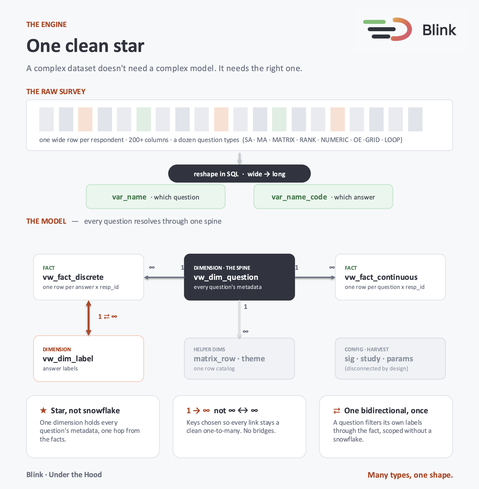
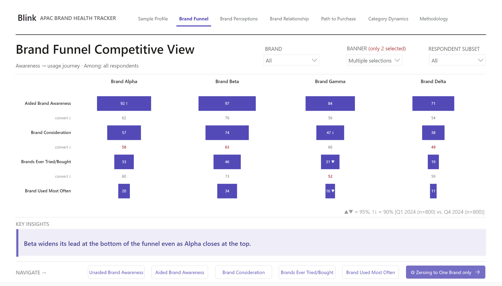
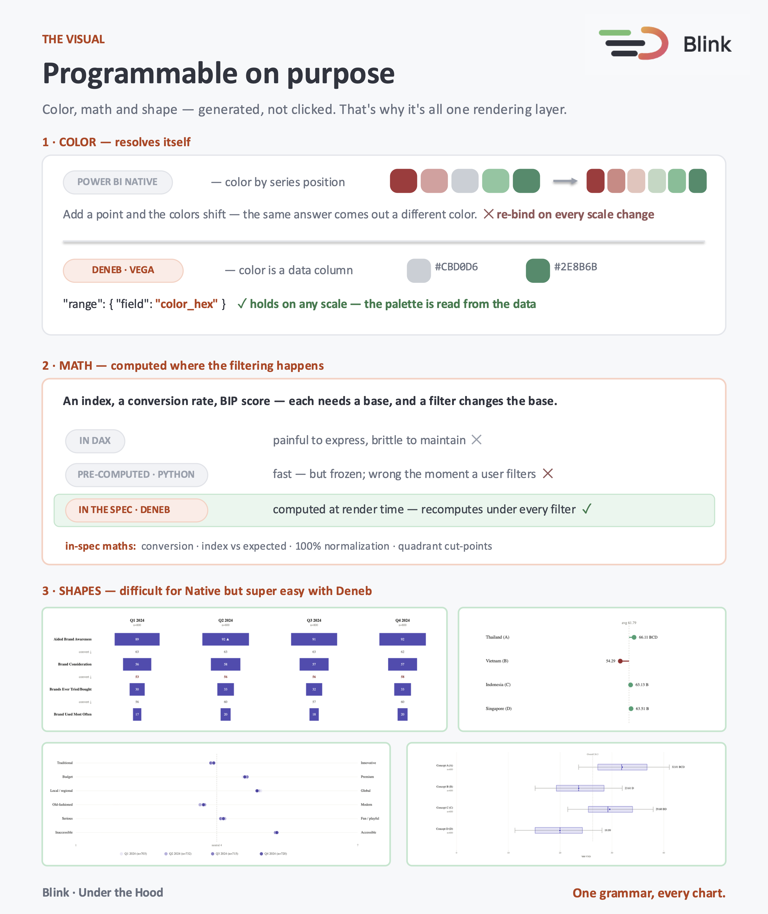
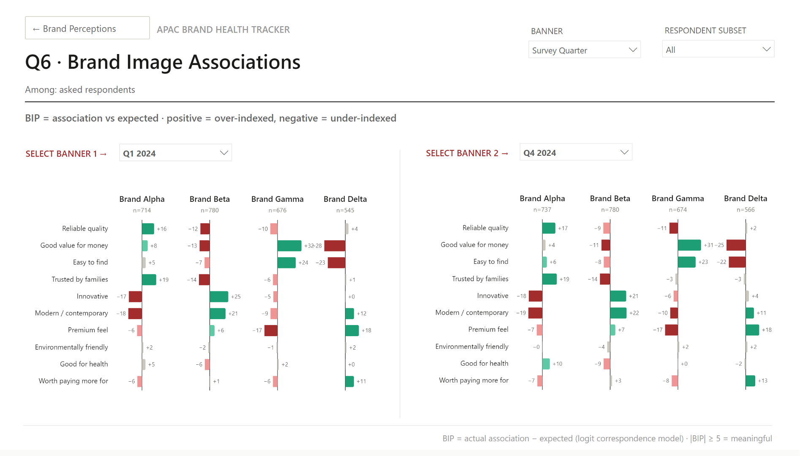
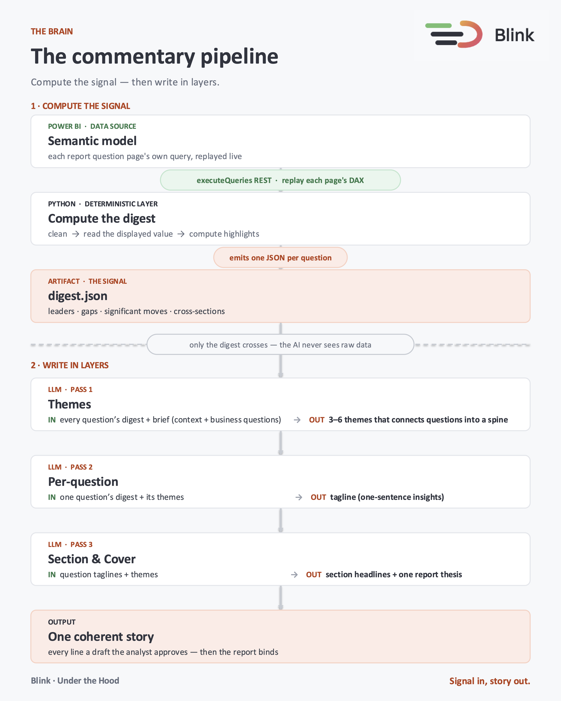

Project
Blink
One SPSS file in. A navigable Power BI report out, with its commentary already drafted. Sixteen pipeline stages, one codebase, any study.
- Role
- Sole developer — pipeline, data model, report generation, app
- Input
- Raw SPSS export (
.sav) - Output
- Multi-page Power BI report (.pbip) with approved AI commentary bound in
- Stack
- Python, T-SQL, Power BI PBIR, DAX, Deneb/Vega, Streamlit, LLM APIs
- Engine
- 16 stages, config-driven — one codebase serves many studies
- Model
- Star schema, one question dimension as spine, two fact tables
- Run on
- Brand health tracker (multi-wave, 4 markets) · snack-bar concept test
- Data
- Anonymised dummy data throughout
- Source
- Private — walkthrough available on request
The reports
Two studies of completely different shape — a multi-wave brand tracker across four markets, and a single-wave concept test. Same codebase, same model, no bespoke handling. That's the claim the whole project rests on, so both are here to check.
Study 1 · APAC brand health tracker · 4 markets · n=3,200
Interactive — use the slicers and the section navigation. Open full screen → · Download as PDF
Study 2 · Vietnam snack-bar concept test · n=600
Open full screen → · Download as PDF
The problem
Every market research study is structurally different, so in practice every Power BI report gets built by hand - one bespoke dashboard at a time. That doesn't scale. And what usually ships is a data atlas: page after page of charts, with the reader left to find the story themselves.
Blink goes after both. It builds the report programmatically from the survey's own metadata, and it writes the report's argument before anyone opens it.
The engine
A raw survey file is one wide row per respondent — 200+ columns, a dozen question types that behave nothing alike: single-answer, multi-answer, matrix, grids, ranks, numerics, loops, open-ends. The instinct is to mirror that complexity in the model: a table per question type, metadata scattered, many-to-many relationships holding it together.
That's the trap. The complexity belongs upstream. Blink reshapes everything in SQL — wide to long — until every question type resolves into the same shape, then loads it into SQL Server as a clean star.

Three rules keep the model honest:
- Star, not snowflake.
vw_dim_questionis the spine — every question's metadata in one place, one hop from either fact table. - One-to-many, never many-to-many. Keys are designed so every relationship stays deterministic. No bridge tables, no ambiguous filter paths.
- Single-direction by default. One bidirectional relationship exists, deliberately quarantined, so a question can filter its own answer labels through the fact without snowflaking the model.
The payoff is that the Power BI side stays cheap. Measures are written once, the report template is built once, and a new study plugs into the same architecture instead of starting over. Above the model sits a DAX significance-testing system covering proportions and means across four comparison mechanisms — subgroup banner, item, item column, and loop entity.
Generating the report
The report isn't drawn by hand either. Power BI's PBIR format stores a report as JSON, so
Blink assembles one from a study-agnostic template plus a per-study manifest: clone pages,
build the tab bars and navigation cards, wire the funnel pages, set model parameters, emit a
.pbip.

The visual layer
Every chart is a Vega specification rendered through Deneb rather than a native Power BI visual. That sounds like a harder route, and it is — but a report that builds itself can't depend on point-and-click formatting.

- Colour stops breaking. Native visuals assign colour by series position, so adding a category silently repaints everything. In Blink, each answer carries its own hex in the data model and the spec reads it as a field. The palette holds at any scale.
- Maths stays interactive. Indices, conversion rates and correspondence scores each need a base, and filtering changes the base. Precomputing in Python freezes them; expressing them in DAX is brittle. In the Vega spec they recompute at render time, under whatever filter the user applied.
- The chart fits the question. Box plots for expected price, a breadth-versus-intensity quadrant for driver rankings, deviation profiles for brand image — instead of picking whichever native visual is closest.

The commentary
What most people do: hand the charts to a model with a prompt about tone and hope. It was fine until it wasn't — a number quietly wrong here, a page reading like a different writer there, and every line still needing manual verification.
The model wasn't the problem. Asking one prompt to do the maths and the meaning at the same time was. Blink’s approach is completely different: the two jobs need to be separated.

A deterministic Python layer replays each report page's own DAX through the Power BI
executeQueries REST API and computes the highlights — leaders, gaps, significant
moves, cross-sections — into one digest.json per question. Only the digest
crosses to the model. The AI never sees a raw row, so its job is to explain numbers rather
than find them.
Three passes then write in layers: themes across the whole study first, then a one-sentence insight per question bound by those themes, then section headlines and a single cover thesis. The report reads as one argument rather than two dozen isolated bullets.
Everything lands in a commentary contract as status='draft'. The report binds
only rows marked approved, so nothing reaches a reader without an analyst signing off on it.
That gate is the point, not a limitation.
The app
All of that is hidden behind a Streamlit control app that presents the pipeline as a six-step journey — project, data prep, build model, build report, write commentary, review and publish. Non-blocking runs with a live filtered transcript, cancel, partial re-runs of a single question or section, in-app SQL setup, and an editable approval grid. State persists across browser refreshes.
Building this changed how I think about the pipeline. A stage that only I would ever run can be cryptic; a stage a researcher runs has to explain itself while it works.
Phase 1: the PowerPoint workstream
Blink started as a deck generator — the same idea, output to fully editable PowerPoint via
python-pptx, built on public Pew Research data. It worked, and the reports still
look good, but it hit a ceiling: without a semantic layer underneath, every study needed its
own handling.
That's what pushed the whole thing onto SQL and Power BI. The Phase 1 code is superseded but the decks are real output, so here is one being generated.
A deck generated end to end from the source file — no slide touched by hand. · Example deck 1 · Example deck 2
Limitations
- Validated end to end on two study types. Studies without open-ends or loops should degrade gracefully; that's asserted, not yet proven.
- Open-end coding runs through BERTopic in a notebook outside the pipeline. It's the one genuinely manual step and the obvious next thing to fold in.
- It runs locally — SQL Server in Docker, an Azure CLI token for the REST API. Nothing is deployed to cloud infrastructure, which is a real gap in the stack rather than a design choice.
- The analyst approval gate means "automated" ends one step before publication. I'd keep it that way, but it should be stated rather than glossed.
Write-ups
I published a three-part architecture teardown while building this: Part 1 - The Brain, Part 2 - The Engine, Part 3 - The Visual.
Source code
The pipeline source is private — it's the part with commercial value. Everything about how it works is open: I'm happy to walk through the architecture, the schema, the DAX and the PBIR generation in detail, and to screen-share a study running end to end.